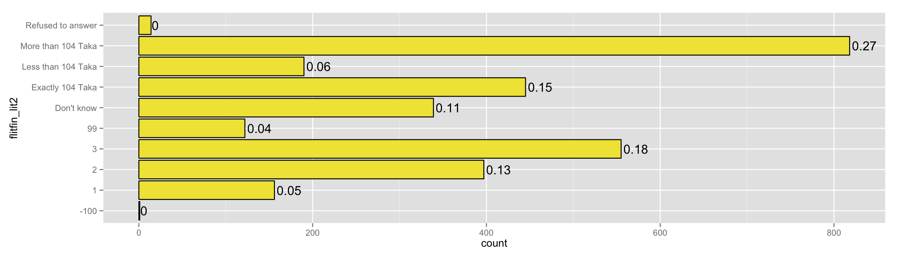
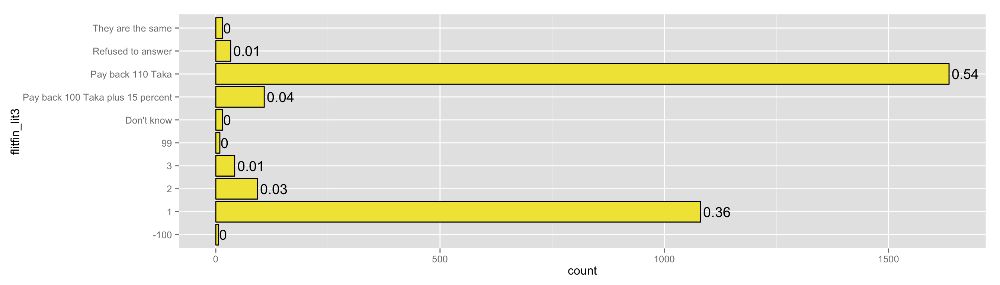
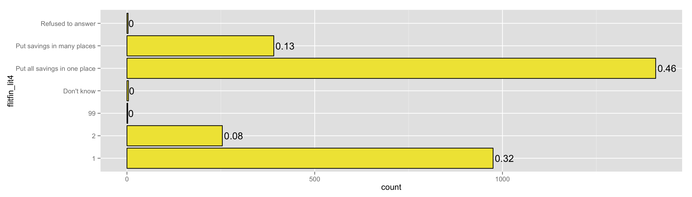
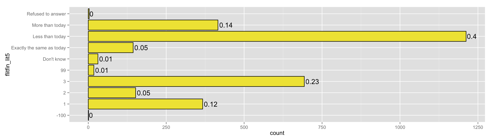
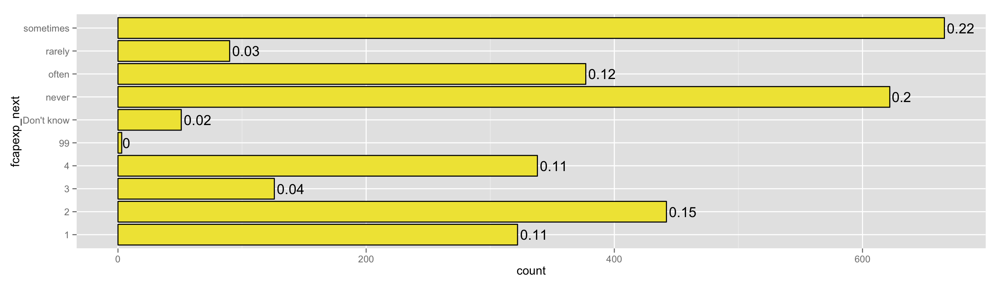
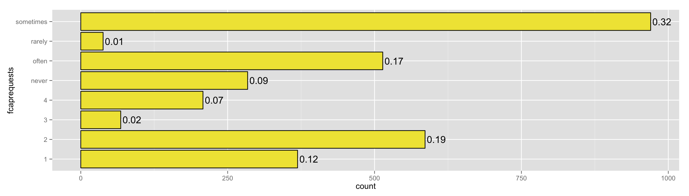
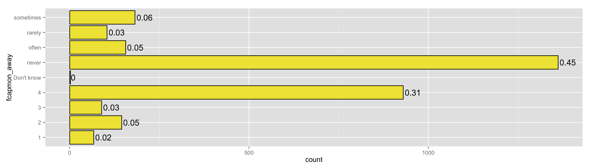
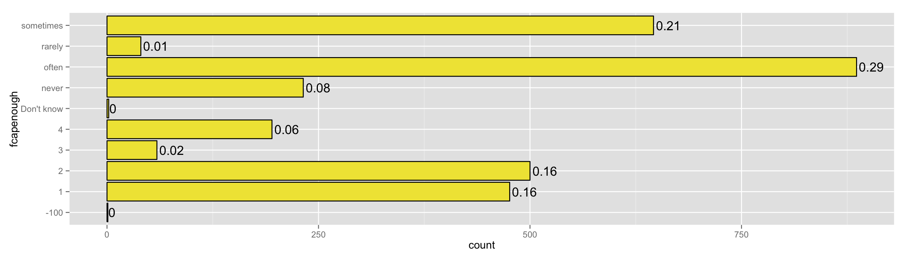
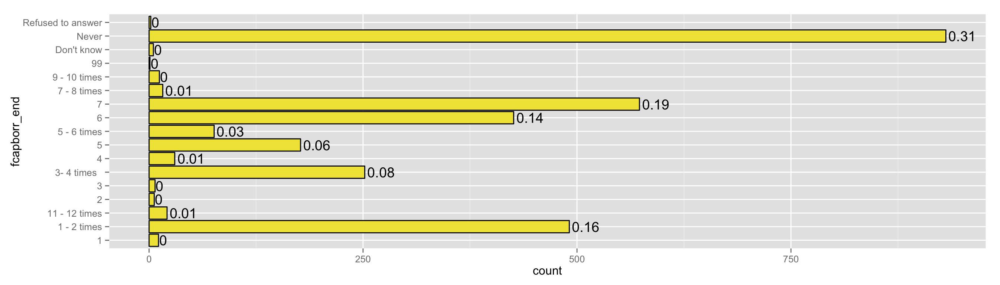
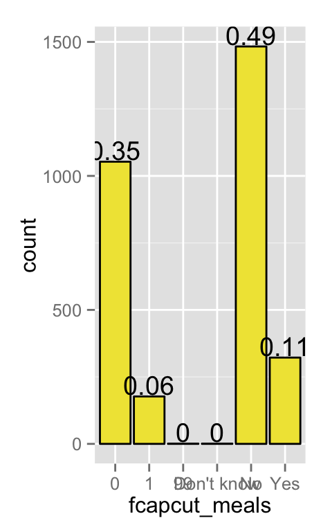

yes == correctly answered
8 tasks…. titration switch occurs from 4=>5
##
## Yes No
## 2100 3##
## Yes No
## 2082 21##
## Yes No
## 1903 200##
## Yes No
## 1379 724##
## Yes No
## 751 1352##
## Yes No
## 163 1940##
## Yes No
## 43 2060##
## Yes No
## 23 2080suppose you had 100 Taka in a savings account and the interest rate was 2% per year. After 1 year, how much do you think you would have in the account if you left the money to grow?
suppose you saved 100 Taka at a bank and you get 2% interest at the end of each month. If you kept your money in the bank for two months, how much money would you have?

suppose you need to borrow 100 Taka. You have two choices. The first choice is you have to pay back 110 Taka in 1 month. The second choice is you have to pay back 100 Taka plus 15 percent in one month. Which is the better deal for you?

is it safer to put all your savings into one business or investment, or to put your savings into multiple businesses or investments?

imagine that the interest rate on your savings account was 5% per year and the inflation rate was 7% per year. After one year, how much would you be able to buy with the money in the account?

how often do you know roughly what will be your expenses next month?

do you procrastinate tasks like saving?
do you have trouble saying no to requests for financial help from others? 
do you keep your money in a place far away so that you can’t get to it or use it? 
do you have trouble staying within financial plans that you make?
do you give in to temptations to spend money on fun and pleasure for yourself and your family?
are you concerned about not having enough money to pay your normal monthly bills?

are you concerned about not having enough money to fulfill the needs of family members who depend on your income?
are you concerned about not having enough money to repay money you have borrowed?
if you had a health emergency that urgently required an amount of money equal to what you earn or receive in a typical month, where would you get the money from?
in the last 12 months, were there days when you didn’t have food to fulfill the needs of your family?
in the last 12 months, how many times did you have to borrow money at the end of the month because your salary was not sufficient to fulfill your needs or the needs of your family? 
in the last 12 months, did you or any other adults in your household cut the size of your meals or skip meals because there were not enough money for food?
